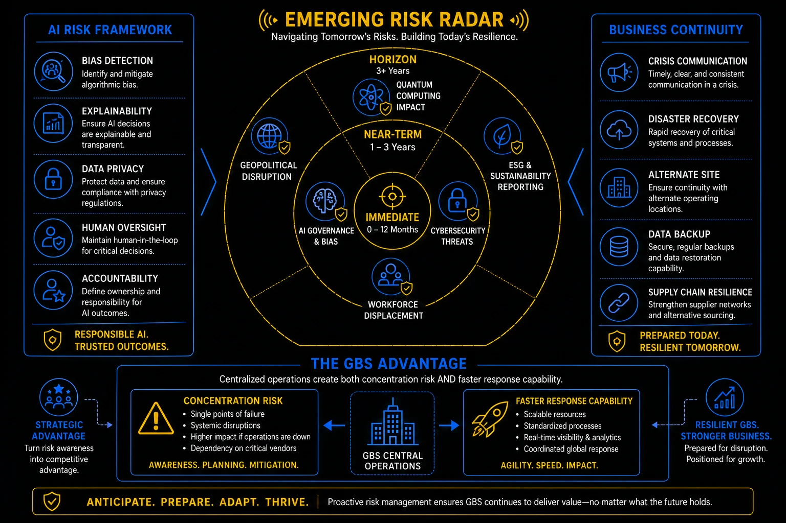

Pillar 9 · Cluster 3
Emerging risks in GBS operations
Shadow IT, ESG reporting, ethical AI governance, and social engineering threats represent the evolving risk landscape that GBS organizations must address proactively.

Emerging risk radar — from immediate threats to horizon risks
Topic 01 · Technology Risk
Shadow IT — risks and management strategies
When GBS teams adopt tools, automations, and cloud services without IT approval, they create ungoverned data flows, security gaps, and compliance blind spots.
Shadow IT emerges when official IT processes are too slow, too rigid, or too disconnected from operational needs. A finance analyst signs up for a cloud-based reconciliation tool because the approved system is clunky. A team lead builds Power Automate flows that move sensitive data between systems without security review. An HR team stores employee data in a personal Google Drive. Each instance creates risk — data leakage, non-compliance, unsupported systems, and undocumented processes.
- Discover — inventory all tools and applications in use, not just the ones IT approved
- Assess — evaluate each shadow tool for security risk, data privacy compliance, and operational dependency
- Decide — for each tool: adopt (bring under IT governance), replace (migrate to approved alternative), or retire (remove and migrate data)
- Enable — create fast-track approval processes so teams can get legitimate tools approved in days, not months
- Monitor — continuous discovery of new unsanctioned tools through network monitoring and procurement controls
Business continuity — crisis comms, DR, alternate site, data backup
Topic 02 · Sustainability
ESG — measuring GBS sustainability impact
Environmental, Social, and Governance reporting is becoming mandatory. GBS organizations contribute to ESG outcomes through energy consumption, workforce practices, and governance standards.
- Environmental — energy consumption of office facilities and data centers, business travel carbon footprint, paper and waste reduction
- Social — workforce diversity metrics, employee wellbeing programs, community impact, labor practices across geographies
- Governance — internal controls effectiveness, anti-corruption compliance, data privacy adherence, ethical AI governance
- Reporting — GBS teams increasingly required to collect, validate, and report ESG data as part of corporate sustainability disclosures
The GBS advantage — concentration risk vs faster response capability
Topic 03 · AI Governance
Ethical AI — governance of automated decisions
When AI makes or influences decisions in GBS — invoice approval routing, hiring screening, performance analytics — the organization needs governance to ensure those decisions are fair, transparent, and auditable.
- Transparency — users affected by AI-driven decisions should know that AI is involved and understand the general logic
- Fairness — AI models must be tested for bias across protected characteristics (gender, ethnicity, age, nationality)
- Accountability — every AI-driven decision must have a human owner who is accountable for the outcome
- Auditability — AI decision logic, training data, and outcomes must be documented and reviewable
- Human oversight — critical decisions (hiring, performance ratings, financial approvals) require human review, not full automation
AI risk framework — bias, explainability, privacy, oversight, accountability
Topic 04 · Cybersecurity
Social engineering and phishing awareness
The most sophisticated security architecture is defeated by one employee clicking a malicious link. Social engineering exploits people, not systems.
- Urgency pressure — "Your account will be suspended in 24 hours" is designed to bypass rational judgment
- Impersonation — emails appearing to come from executives, IT support, or HR requesting credentials, wire transfers, or sensitive data
- Domain spoofing — email addresses that look legitimate but use subtle misspellings (rn instead of m, l instead of I)
- Unusual requests — any request to bypass normal processes, share passwords, or transfer funds through non-standard channels
- Attachment risk — unexpected attachments, particularly .exe, .zip, or macro-enabled Office documents from unknown senders
- Do not click, do not reply, do not forward to colleagues
- Report to IT security through the designated channel (phishing button, security email)
- If you already clicked — disconnect from the network immediately and contact IT security
- If financial fraud is suspected — contact the finance controls team and freeze the affected transaction
- Verify through a separate channel — if the request seems legitimate, call the sender directly using a known phone number
- AI is not going to replace GBS professionals — but GBS professionals who use AI will replace those who do not. The routine, rule-based work is automating fast. The judgment calls, the stakeholder management, the exception handling — that is where your value moves. Start building those skills now.
- The risk most GBS leaders are not talking about: concentration risk. When you centralize processes into fewer hubs, you gain efficiency but increase exposure to local disruptions — political instability, infrastructure failures, talent market shifts. BCP is not a compliance exercise; it is an operational necessity.
Reference
Glossary
Full glossary at the GBS Insider Club Field Guide.
- Gartner — Managing Shadow IT in the Enterprise, 2025
- EU — Corporate Sustainability Reporting Directive (CSRD), 2022
- NIST — AI Risk Management Framework, 2023
- Verizon — Data Breach Investigations Report, 2025
- FBI IC3 — Internet Crime Report, 2024